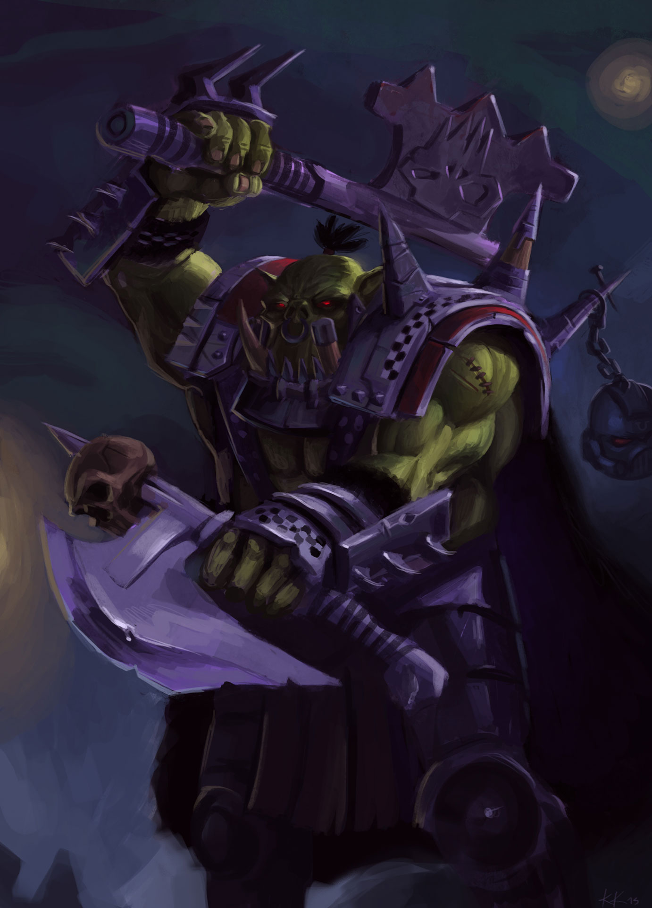

O GRITO DE GUERRA: LORE
Os Orks são a raça mais belicosa da galáxia, uma praga biológica que vive apenas para a alegria da destruição. Eles não precisam de motivos complexos ou ideologias; para um Ork, a guerra é a sua própria recompensa. Nascidos de esporos e criados para o combate, eles se reúnem em massas colossais conhecidas como Waaagh!, uma mistura de cruzada religiosa e migração violenta.
Sob o comando de feras como Ghazghkull Thraka, os Orks provam que não importa quão avançada seja a sua tecnologia — nada resiste a uma montanha de músculos verdes e um machado enferrujado.
A GALERIA DOS KABAS

Ork Boy

Nobz

Warboss

Deff Dread

Stormboyz

Gretchins

Flash Gitz

Meganobz
O ARSENAL: DAKA, CORTE E EXPLOSÃO
O armamento Ork, conhecido como Kustom Mega-Tools, desafia as leis da física e
da lógica. Construídas pelos 'Mekboyz' a partir de restos de tanques destruídos e metal
retorcido, essas armas funcionam principalmente porque os Orks acreditam que deveriam funcionar.
• Shootas e Big Dakka: Cospem uma quantidade absurda de chumbo.
• Power Klaws: Capazes de partir um tanque Imperial ao meio.
• Tecnologia Instável: De canhões de energia a foguetes amarrados com fita adesiva.

A DEFESA: FERRO VELHO E SORTE
A armadura de um Ork é uma colagem caótica de placas de aço rebitadas e grades de ventilação. Frequentemente pintadas de vermelho (porque 'os vermelhos correm mais') ou azul (para dar sorte), essas proteções são desengonçadas e pesadas. No entanto, a verdadeira defesa de um Ork é sua fisiologia incrivelmente resiliente; eles podem sobreviver a ferimentos que matariam qualquer outra raça.